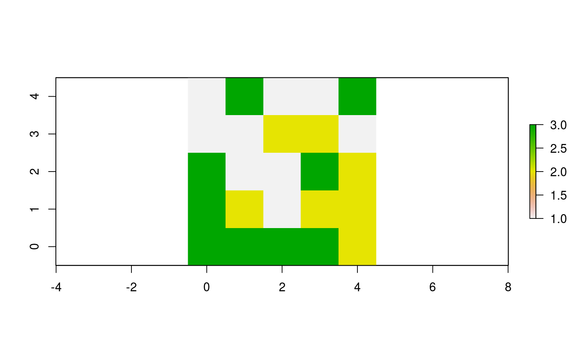

Diffuse values in a world
Each patch gives an equal share of a portion of its value to its neighbor patches.
diffuse(world, pVar, share, nNeighbors, torus = FALSE) # S4 method for worldMatrix,missing,numeric,numeric diffuse(world, share, nNeighbors, torus) # S4 method for worldArray,character,numeric,numeric diffuse(world, pVar, share, nNeighbors, torus = FALSE)
Arguments
| world | WorldMatrix or worldArray object. |
|---|---|
| pVar | Character. If the |
| share | Numeric. Value between 0 and 1 representing the portion of the patches values to be diffused among the neighbors. |
| nNeighbors | Integer: 4 or 8. Represents the number of neighbor patches considered. |
| torus | Logical to determine if the |
Value
WorldMatrix or worldArray object with patches values updated.
Details
What is given is lost for the patches.
If torus = TRUE, all patches have nNeighbors patches around
them, which
some may be on the other sides of the world. If torus = FALSE,
patches located on the edges of the world have less than
nNeighbors patches around them.
However, each neighbor still gets 1/4 or 1/8 of the shared amount
and the diffusing
patch keeps the leftover.
References
Wilensky, U. 1999. NetLogo. http://ccl.northwestern.edu/netlogo/. Center for Connected Learning and Computer-Based Modeling, Northwestern University. Evanston, IL.
See also
https://ccl.northwestern.edu/netlogo/docs/dictionary.html#diffuse
https://ccl.northwestern.edu/netlogo/docs/dictionary.html#diffuse4
Examples
w1 <- createWorld(minPxcor = 0, maxPxcor = 4, minPycor = 0, maxPycor = 4, data = sample(1:3, size = 25, replace = TRUE)) plot(w1)# Diffuse 50% of each patch value to its 8 neighbors w2 <- diffuse(world = w1, share = 0.5, nNeighbors = 8) plot(w2)